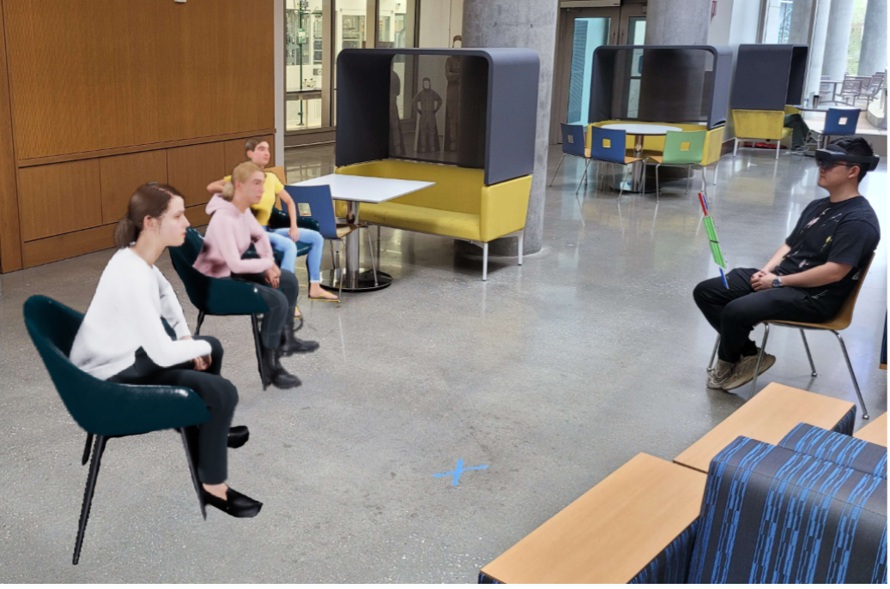
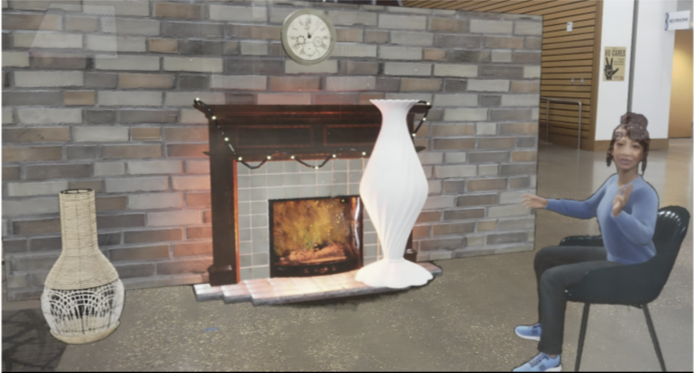
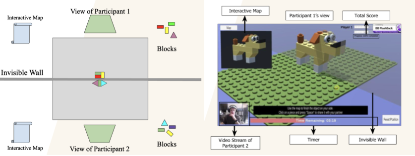

Locomotion Mapping in Augmented Reality Telepresence

Ph.D. Dissertation: Mapping the movement of a user in their own space to their avatar in a dissimilar space while preserving the user's pose and keeping the avatar's movement in the remote space realistic. Learn more...
On-going
Multi-user Augmented Reality Telepresence for Autistic Individuals
An AR communication modality designed to test the feasibility of AR telepresence for multi-user collaboration between Autistic individuals without inducing anxiety. Learn more...
Complete
Augmented Reality Telepresence for Older Adults
A collaborative AR telepresence system that allows older adults to their with their loved ones in a geographically different place. Learn more...
On-going
A Virtual Environment to Support Collaboration between Autistic and Non-Autistic Individuals
A serious game developed to foster collaboration between Autistic and Non-autistic individuals, measure it quantitatively through multimodal data and provide automated and dynamic feedback. Learn more...
Complete